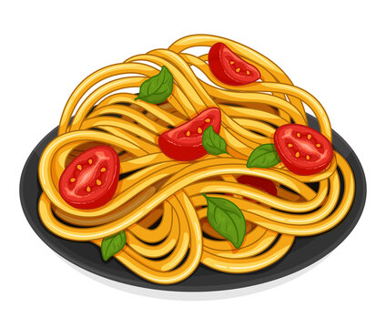

Spaghetti

Description
Serve up a sensational spaghetti dish for dinner.
Ingredients
- 500g beef mince
- spaghetti
- salt
- 2 x 400g cans chopped tomatoes
- basil
- onion
Steps
- Using a sharp knife, peel the onion, slice in half through the root and trim off the top. Place the onion, cut-side down, on a chopping board. With your knife parallel to the board, cut 3 slices through the onion, keeping the root intact. With knife point at root end, cut down through the onion, from top to bottom 4 times. Holding the root end, finely slice across the onion (see pic above), to give you small diced pieces.
- Set a large frying pan over medium heat and when hot, tip in the oil then onion. Cook for 5 mins until starting to soften, stirring occasionally. Add the garlic, cook 2 mins more until the onions start to turn golden. When the onion has softened, tip in the tomatoes and half the basil. Leave to gently bubble for 15 mins until the sauce has thickened and looks pulpy. Stir occasionally and break up any large clumps of tomato with the back of your spoon.
- Pour water ¾ of the way up your largest pan. Heat over a high heat and add plenty of salt. When water has reached a rolling boil, place the spaghetti into the pan. As it softens, use your hands to push all of it into the water. Give it a stir to separate the pasta, then cook according to pack instructions, about 10 mins. Taste a strand of pasta. It should be just soft, but not mushy. Scoop out a cup of water before draining in a colander (this will help to loosen your sauce).
- Finishing touches: Tip the drained pasta back into its cooking pan, then pour over the tomato sauce. Give everything a good stir. The sauce should just coat the pasta, if it is thick and looks dry, stir in a few spoons of the pasta water. If it is watery, cook over a low heat until evaporated, stirring often. Use your hands to break the mozzarella into chunky pieces and stir through the pasta along with the remaining basil leaves. Serve straight away.